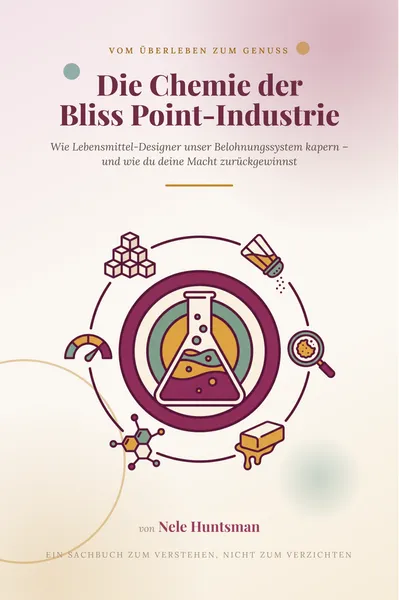

Das Steinzeitgehirn im Schlaraffenland
Produktprofil · Marktplatz-Daten 2026-10-13 · Verkaufsseiten-Recherche 2026-10-13 · Kategorien: Health & Fitness, Personal Development, Food & Drink
- Das Steinzeitgehirn im Schlaraffenland ist ein/e E-Book in Health & Fitness und Personal Development, vertrieben über den Digistore24-Marktplatz von Anbieter That-Clicks, gelistet seit 2026-06-25.
- Listenpreis $10.44; Digistore24 meldet — Checkout-Konversion, — Stornierungsquote und 50 % Affiliate-Provision.
- Verdienst pro Verkauf (Affiliate): $5.22 (Anbieter-seitige Statistik, keine Prognose).
Interesse an Das Steinzeitgehirn im Schlaraffenland? Aktueller Preis, Boni und Garantiebedingungen finden Sie auf der offiziellen Seite des Anbieters:
Offizielle Verkaufsseite ansehen
Affiliate-Link (Werbung) — wir verdienen ggf. eine Provision, ohne Mehrkosten für Sie.
Marktplatz-Daten
| Produkttyp | E-Book |
|---|---|
| Preis | $10.44 (Single payment) |
| Affiliate-Provision | 50 % |
| Garantie/Rückgabe | Laut Verkaufsseite des Anbieters — vor dem Kauf auf der offiziellen Seite prüfen |
| Anbieter | That-Clicks (gelistet seit 2026-06-25) |
| Marktplatz-Statistiken* | Checkout-Konversion — · Stornoquote — · Verdienst/Verkauf $5.22 |
* Anbieter-seitige Statistiken von Digistore24; sie hängen von der Traffic-Qualität ab und sind keine Prognose.
Marktplatz-Beschreibung des Anbieters
Das Steinzeitgehirn im Schlaraffenland Warum wir essen, wie wir essen - und warum Genuss kein Fehler ist Du musst dein Essen nicht kontrollieren. Du musst es verstehen. Dieses Buch erklärt, warum wir essen, wie wir essen - jenseits von Kalorientabellen und guten Vorsätzen. Es zeigt, dass Heißhunger, Frustessen und das Scheitern von Diäten kein Zeichen von zu wenig Disziplin sind, sondern die logische Reaktion eines uralten Gehirns auf eine moderne Welt voller Überfluss.
Von der Verkaufsseite des Anbieters
Seitentitel: Das Steinzeitgehirn im Schlaraffenland | That Clicks Shop
Meta-Beschreibung: Ein warmes, kluges Sachbuch über Essverhalten, Heißhunger und Genusskompetenz - ohne Diätplan und ohne schlechtes Gewissen.
Hauptüberschrift
Das Steinzeitgehirn im Schlaraffenland
Abschnitts-Überschriften
- Du musst dein Essen nicht kontrollieren. Du musst es verstehen.
- 0 Artikel
Einstiegstext
Dieses Buch erklärt, warum wir essen, wie wir essen - jenseits von Kalorientabellen und guten Vorsätzen. Es zeigt, dass Heißhunger, Frustessen und das Scheitern von Diäten kein Zeichen von zu wenig Disziplin sind, sondern die logische Reaktion eines uralten Gehirns auf eine moderne Welt voller Überfluss.
Unser Gehirn wurde für eine Welt gebaut, in der Essen knapp war und Genuss über Leben und Tod entschied. Heute lebt dieses Steinzeitgehirn im Schlaraffenland - umgeben von Zucker, Werbung und ständiger Verfügbarkeit. Genau aus diesem Spannungsfeld entstehen Heißhunger, emotionales Essen und der ewige Kampf mit dem eigenen Körper.
Schritt für Schritt nimmt dich das Buch mit in die Psychologie und Biologie hinter deinem Essverhalten: warum „Wollen“ und „Mögen“ zwei völlig verschiedene Dinge sind, warum Diäten den Körper in den Alarmzustand versetzen und wie Essen zum Tröster, Belohner und Stresskiller wird. Kein Diätplan, keine Verbotslisten - sondern Verständnis, das wirklich etwas verändert.
Preisangaben auf der Seite: $17
Recherche-Methode: rohes HTML · 416 Wörter · Qualität: rich · recherchiert am 2026-10-13. Vollständige Recherche-Datei (MD) ↗
Wie Produkte dieser Art geliefert werden
Allgemeiner Hinweis zu diesem Produkttyp (keine anbieterspezifische Anleitung): E-Books auf Digistore24 werden als digitaler Download geliefert (meist PDF/EPUB): direkt nach dem Checkout erhalten Sie einen Downloadlink oder Mitgliederzugang und können auf jedem Gerät lesen. Für die genaue Anwendung von Das Steinzeitgehirn im Schlaraffenland sind die offizielle Verkaufsseite und die enthaltenen Materialien maßgeblich.
Gut zu wissen
- Keine Garantie-Formulierung in unserer Recherche gefunden — bestätigen Sie das Rückgabefenster auf der offiziellen Seite, bevor Sie kaufen.
- Marktplatz-Zahlen (Preis, Provision, Konversion, Stornoquote) — Quelle: offizielle Digistore24-Marktplatz-API (Affiliate-Sicht), Stand 2026-10-13. Gegenprüfung: Marktplatz-Suche nach Produkt-ID 701491.
- Verkaufsseiten-Zitate — Quelle: https://ebooks.that-clicks.de/buecher/das-steinzeitgehirn-im-schlaraffenland, abgerufen 2026-10-13 (Methode: rohes HTML). Verify: offizielle Seite öffnen.
- Garantie / Rückgabe — vom Anbieter festgelegt; vor dem Kauf auf der Verkaufsseite bestätigen.
- Nicht von uns geprüft: Produktqualität, Ergebnisse, Testimonials — kein Praxistest für dieses Listing durchgeführt.
Häufige Fragen zu Das Steinzeitgehirn im Schlaraffenland
Antworten aus dem Marktplatz-Snapshot (2026-10-13) und der Verkaufsseiten-Recherche (2026-10-13); Anbieteraussagen sind inline gekennzeichnet.
Was ist Das Steinzeitgehirn im Schlaraffenland?
Das Steinzeitgehirn im Schlaraffenland ist ein Angebot des Typs „E-Book" im Digistore24-Marktplatz, Anbieter: That-Clicks, gelistet seit 2026-06-25. Eingepflegt unter Gesundheit & Fitness und Persönlichkeitsentwicklung. Digistore24 wickelt Checkout, Lieferung und Rückgaben ab.
Wie viel kostet Das Steinzeitgehirn im Schlaraffenland?
Der Digistore24-Marktplatz listet es für $10.44 (single payment). Preise legt der Anbieter fest und können sich ändern — der Marktplatz-Eintrag oben zeigt den Schnappschuss; die offizielle Verkaufsseite zeigt den aktuellen Preis.
Gibt es eine Geld-zurück-Garantie für Das Steinzeitgehirn im Schlaraffenland?
Unsere Verkaufsseiten-Recherche hat keine explizite Garantie-Formulierung gefunden. Viele Digistore24-Produkte bieten 60 Tage Geld-zurück, aber das legt jeder Anbieter selbst fest — bestätigen Sie es auf der offiziellen Verkaufsseite, bevor Sie kaufen.
Ist Das Steinzeitgehirn im Schlaraffenland seriös?
Wir bewerten keine Seriosität — wir veröffentlichen überprüfbare Zahlen: Anbieter That-Clicks (gelistet seit 2026-06-25), Checkout-Konversion —, Stornoquote —, Affiliate-Verdienst/Verkauf $5.22 (alles Anbieter-seitige Marktplatz-Statistiken). Lesen Sie unsere 6-Punkte-Bewertungsmethode und entscheiden Sie anhand der Zahlen — oder diskutieren Sie Das Steinzeitgehirn im Schlaraffenland auf GitHub.
Wo kann ich Das Steinzeitgehirn im Schlaraffenland sicher kaufen?
Nur über die offizielle Verkaufsseite, die auf dieser Seite verlinkt ist (Checkout und Rückgaben laufen über Digistore24). Prüfen Sie dort Preis und Garantie vor der Bestellung. Der Link ist ein Affiliate-Link — der Kauf unterstützt diese Website ohne Mehrkosten für Sie.
Wie erhalte ich Das Steinzeitgehirn im Schlaraffenland nach der Zahlung?
Der Checkout läuft über Digistore24: Nach der Zahlung erhalten Sie Ihren Zugang oder Download per E-Mail und in Ihrem Digistore24-Kundenkonto. Lieferdetails für diesen Produkttyp: E-Books auf Digistore24 werden als digitaler Download geliefert (meist PDF/EPUB): direkt nach dem Checkout erhalten Sie einen Downloadlink oder Mitgliederzugang und können auf jedem Gerät lesen. Bei Problemen kann der Digistore24-Käufersupport Ihre Bestellung wiederherstellen.
Alle 50 Käuferfragen zu Gesundheit & Fitness — das komplette Kategorie-FAQ.
Das Steinzeitgehirn im Schlaraffenland auf Reddit diskutieren
In Community-Threads vergleichen echte Käufer Erfahrungen. Wir verlinken Communities, keine einzelnen Posts — Threads verschwinden, Subreddits bleiben:
- r/FITNESS — deutschsprachige Community mit Diskussionen zu health & fitness.
- Reddit-Suche nach „Das Steinzeitgehirn im Schlaraffenland" — Live-Ergebnisse, von uns nicht beeinflusst.
- Top-„Erfahrungs"-Treffer dieses Jahr — selbst nach Aktualität filtern.
Passendes auf Amazon.de
Physische Produkte und Zubehör, die häufig zusammen mit Das Steinzeitgehirn im Schlaraffenland gekauft werden:
- Nahrungsergänzung auf Amazon.de — Top-Ergebnisse, Amazon-Ranking.
- Bestseller: Nahrungsergänzung — live Liste von Amazon, von uns nicht kuratiert.
Werbung: Als Amazon-Partner verdient DigistorePicks DE an qualifizierten Käufen (Partner-tag adminstorede-21). Amazon setzt eigene Preise und Provisionen (niedrige einstellige Prozente — weit unter den 30–75% der Digistore24-Anbieter). Amazon ist ein Convenience-Angebot für Sachprodukte, kein Ersatz für das digitale Produkt oben.
Ähnliche Angebote in Gesundheit & Fitness

Eine vollständig strukturierte, medizinisch fundierte Online-Ausbildung zur Vorbereitung auf die Heilpraktikerprüfung – mit klarem Curriculum, systematischem Au

Online Ausbildung zum Holistic Skin & Health Expert, staatlich Zugelassen mit Abschlusszertifikat ( 6 Monate) Werde zertifizierter Holistic Skin & Healt

1:1 Online Training per Video Mentale Klarheit auf Knopfdruck – mitten im echten Leben. Stell dir vor, du könntest deinen Fokus, deine Gelassenheit und deine Wa

bis zu 10% Provision | 600.000€ Umsatzpotenzial für 2026 Marktplatz-Beschreibung Sichern Sie sich Ihren Anteil am Erfolg: Wir suchen exklusive Partner für ein 6
Weitere Angebote von That-Clicks
Digitales Essen & Food Porn Wie Algorithmen und Bilder dein Belohnungssystem kapern – und wie du deine Macht zurückgewinnst Entdecke die geheimen Mechanisme

Die Chemie der Bliss Point-Industrie Wie Lebensmittel-Designer unser Belohnungssystem kapern – und wie du deine Macht zurückgewinnst Du bist nicht disziplinlos.
Das Steinzeitgehirn im Schlaraffenland ist auch gelistet in
Persönlichkeitsentwicklung (711 Produkte) · Essen & Trinken (103 Produkte)
Ähnliche Preislage in Gesundheit & Fitness
Viele Menschen leiden unter Stress und psychischen Belastungen. Dies bedeutet ein großes Gesundheitsrisiko. Die meisten Angebote zur Stressbewältigung und Resil
Du hast kein Motivationsproblem. Du hast ein Ausredenproblem. Dieses E-Book ist nicht für dich, wenn du auf Motivation wartest. Es ist für dich, wenn du weißt,
Ein liebevoll gestaltetes und klar positioniertes Nischenprodukt für Familien, pädagogische Fachkräfte und alle, die Kinder mit Hörgerät oder Cochlea-Implantat
Ähnliche Suchanfragen
Wo Sie es sich ansehen können
Wo Sie es sich ansehen können
Aktuelle Preise, Garantie und Boni finden Sie auf der offiziellen Verkaufsseite:
Offizielle Verkaufsseite ansehen
Das ist ein Affiliate-Link (Werbung) — kaufen Sie darüber, verdienen wir ggf. eine Provision, ohne Mehrkosten für Sie.
Quellen & weiterführende Informationen
- Offizielle Verkaufsseite (aktueller Preis, Garantie, Boni): ebooks.that-clicks.de/buecher/das-steinzeitgehirn-im-schlara (Affiliate-Link)
- Öffentliche Digistore24-Produktseite: digistore24.com/product/701491
- Vollständige Recherche-Datei (Markdown, versioniert): content/products/57131-das-steinzeitgehirn-im-schlaraffenland.md
- Marktplatz-Kategorie: Gesundheit & Fitness
Wie wir Produkte wie Das Steinzeitgehirn im Schlaraffenland bewerten
Sechs Prüfungen, ausschließlich mit offiziellen Marktplatz-Zahlen. Die vollständige Bewertungsmethode lesen · unsere Recherche-Standards & Kennzeichnung.
Fragen oder eigene Erfahrungen mit Das Steinzeitgehirn im Schlaraffenland?
Praxis-Tests veröffentlichen wir erst, nachdem wir ein Produkt selbst gekauft haben — aber Ihre Erfahrung hilft anderen Lesern: Diskussion zu Das Steinzeitgehirn im Schlaraffenland auf GitHub starten/verfolgen. Falsche Zahl gefunden? Korrektur melden — jede Seite zeigt ihre Datenstände, Korrekturen gelten für die ganze Website.